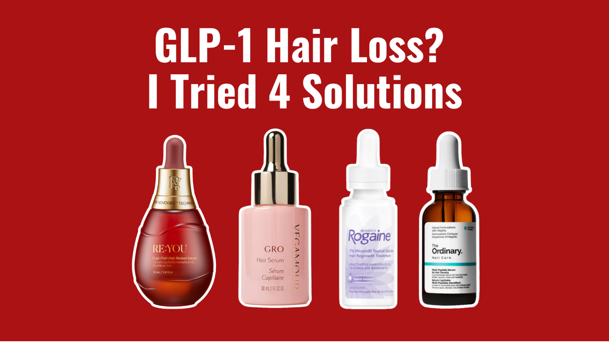
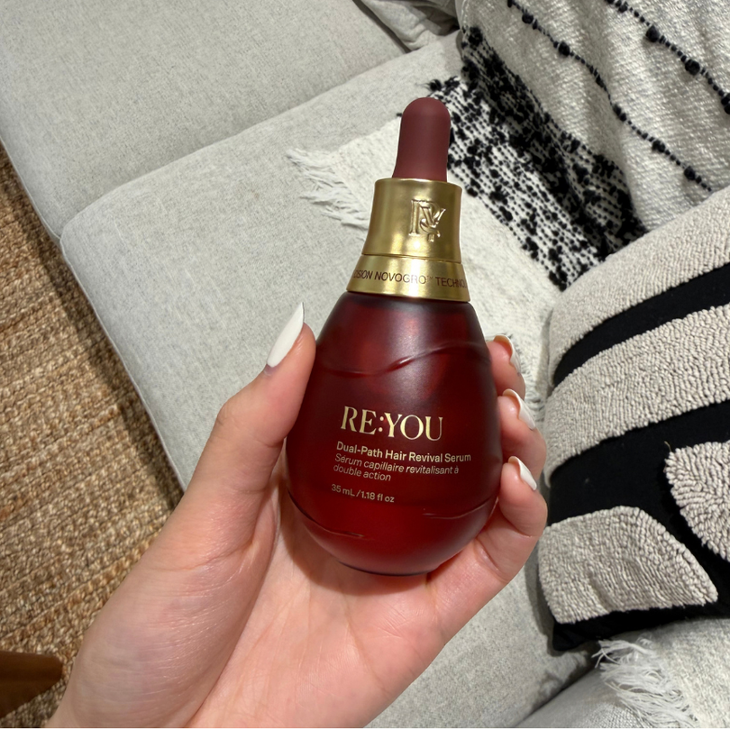
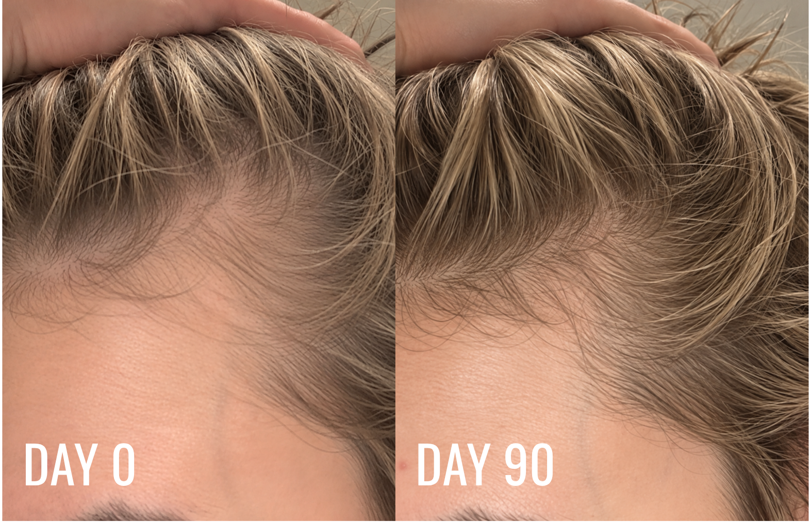
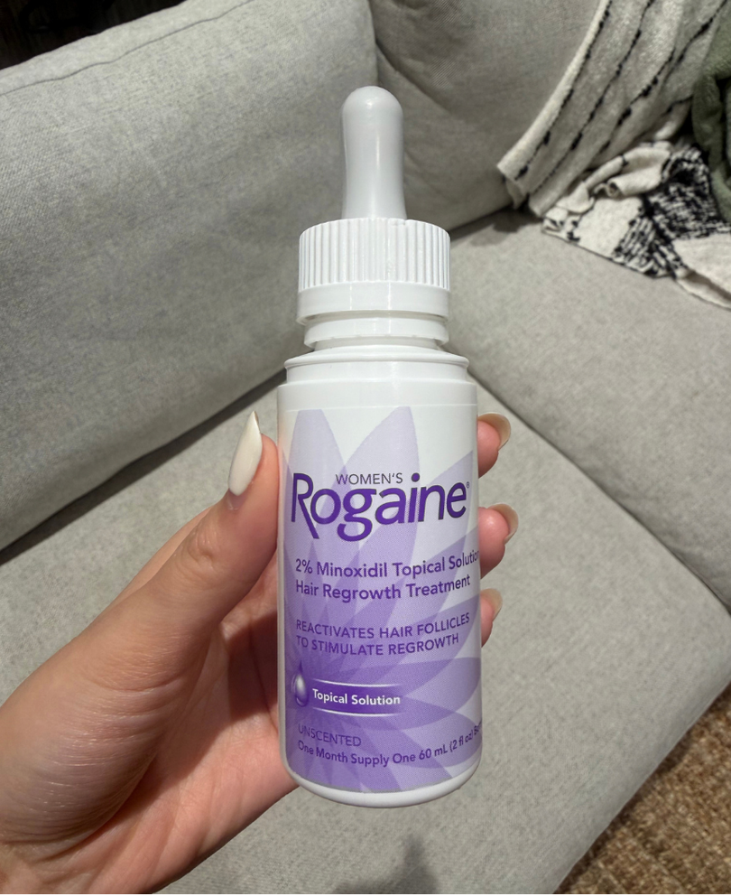
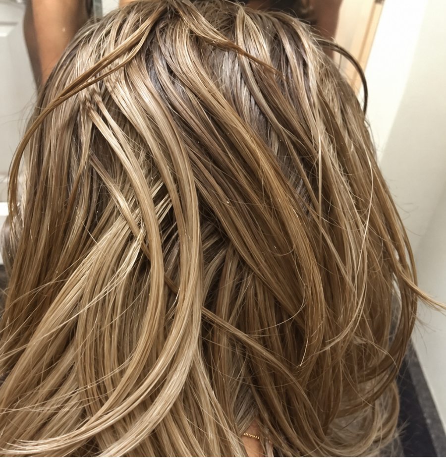
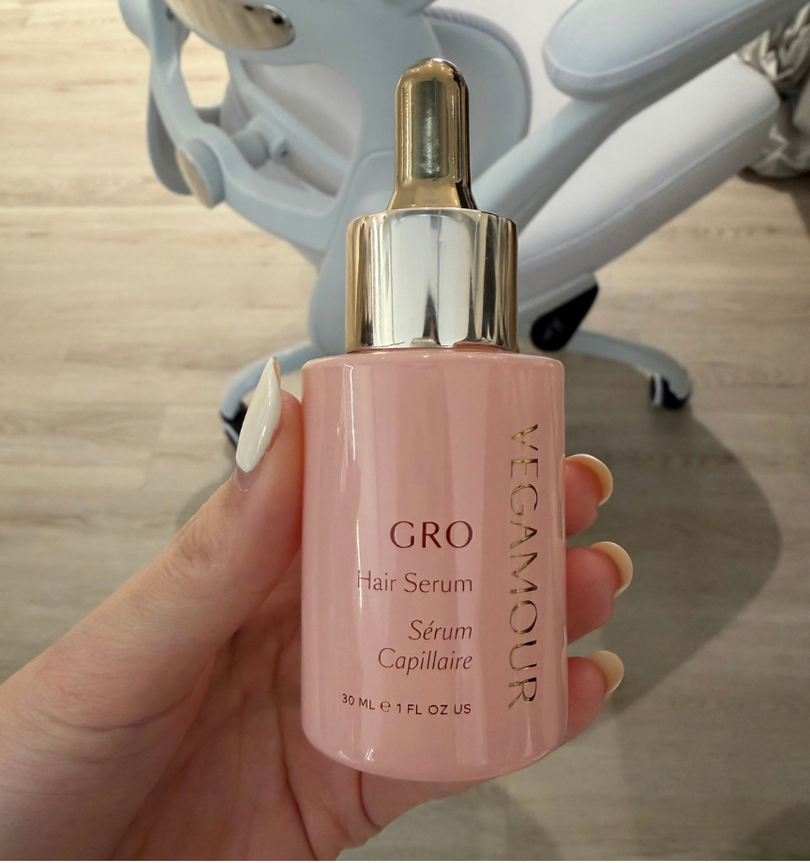
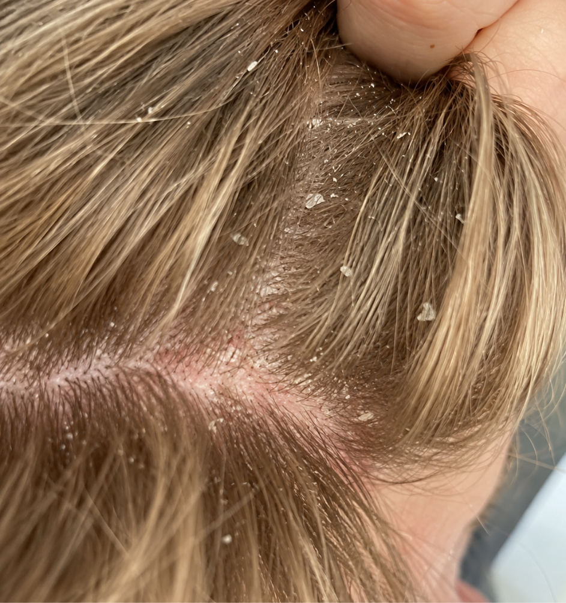
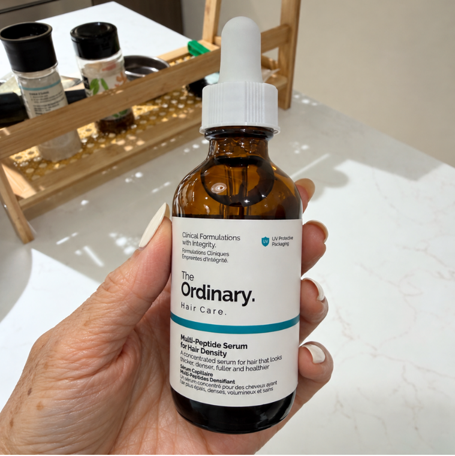

The moment it really hit me was when I pulled my hair into a ponytail one night and had to wrap the elastic around one more time than usual. It just felt so much thinner. After that, I couldn’t stop noticing the hair everywhere. In my shower, on my pillow, in my brush. I was finally happy with my GLP-1 progress, but instead of enjoying it, I found myself worrying about my hair every morning.
I started trying to figure out what I could do, but every search led me to another serum that people swore was “the one.” Eventually, I decided to compare four of the most popular options myself. I used each serum for three months, then stopped for one month before moving on to the next so I could see what happened to my shedding after I stopped.
How I Tested Each Serum
I kept the process as consistent as possible across all four:
- 3 months of consistent use following each serum’s directions
- 1 month off between serums to see how my shedding changed after stopping
- Shedding based on what I noticed in the shower, brush and around my home
- Scalp experience including irritation, dryness, greasiness or residue
- Ease of use and how naturally each serum fit into my daily routine
- Ingredients and research behind each formula
I wasn’t looking for an overnight miracle. I wanted to know which serum actually helped with my shedding, which one I could realistically stick with, and most importantly, what happened when I stopped using it.
The whole experiment took me 15 months, and by the end, I definitely had a favorite.
Here’s What Happened With Each One
1. RE:YOU Hair Revival Serum

RE:YOU Hair Revival Serum
Check PriceRE:YOU came onto my radar through my dermatologist. I’d been complaining about how much hair I was shedding since starting a GLP-1, and she suggested I look into it. I was a little hesitant because the brand is still pretty new, so naturally, I did some digging before committing to three months of it.
The interesting part is its NOVOGRO™ technology. It was developed to target pathways involved in the hair follicle and the environment around it, and the company says it invested more than $2 million into the research behind it. It’s also drug-free and hormone-free. Then I found out RE:YOU had been put up against 2% minoxidil in a randomized, double-blind study of 190 participants. My dermatologist said that was unusually rigorous for a cosmetic hair serum, and that was enough to get me to try it.
By the end of the 90 days, I was definitely finding less hair in my shower and brush. But the thing I kept staring at was my hairline. I had all these tiny baby hairs coming in that I hadn’t noticed before. I also really liked the serum itself. It’s light, doesn’t make my roots greasy, and actually smells nice. No harsh, alcohol-y smell at all.

Then came the part I was most curious about: I stopped using RE:YOU for a month. I kept waiting for the shedding to pick back up, but I didn’t notice it suddenly return. After three months of less shedding, the little hairs around my hairline, and a month off without an obvious rebound, this was the serum I wanted to go back to.
- Noticeably less shedding by 90 days
- Baby hairs appeared around my hairline
- No noticeable rebound shedding during my month off
- Lightweight and didn’t make my roots greasy
- Actually smells good, with no alcohol-y scent
- Drug-free and hormone-free
- NOVOGRO™ Technology targets root cause of hair loss
- Backed by a 190-person randomized, double-blind study
- 90-day money-back guarantee
- Only available online
- Pricier than some hair serums
- 6 month clinical results are still underway
2. Rogaine 2% Minoxidil Topical Solution

Rogaine 2% Minoxidil Topical Solution
Check PriceI went into minoxidil with pretty high expectations. It’s been around forever and has plenty of research behind it, so I was curious to see what three months would do.
But I quickly started dreading the application. It made my roots look greasy, had that alcohol-y smell, and eventually left my scalp feeling dry and irritated. I also noticed more shedding at the beginning, which wasn’t exactly reassuring when shedding was the whole reason I was doing this experiment.
After 90 days, I still wasn’t seeing much new growth or baby hairs around my hairline. To be fair, minoxidil can take longer to show visible results. But between the greasy roots, scalp irritation, and daily upkeep, I was pretty ready for the test to be over. During my month off, I also noticed my shedding starting to pick back up.

- Decades of research
- FDA-approved ingredient
- Affordable and easy to find
- Made my roots look greasy
- Dry, itchy scalp
- Flaking and product buildup
- Initial “dread shed” is stressful
- Had me washing my hair more often
- Requires ongoing use to maintain results
- No obvious baby hairs during my 90-day test
- Made styling my hair harder
3. Vegamour GRO Hair Serum

Vegamour GRO Hair Serum
Check PriceVegamour was basically following me around the internet. I kept getting served ads, and eventually, they got me curious enough to try it. The promise of less shedding and fuller-looking hair sounded good, and at this price point, I went in with pretty high expectations.
But while using it, my scalp started feeling itchy, and I noticed flakes around my roots. That wasn’t something I’d expected to be dealing with. I was already worried about the shedding, so having another scalp concern added to the frustration.
The itching was uncomfortable, but the flakes bothered me just as much. I wanted something I could apply and get on with my day. Instead, I found myself paying even more attention to my scalp. I can’t say for certain that the serum caused those changes, but they were part of my experience while using it.
I didn’t expect fuller hair overnight, and I understood that results would take time. But I wanted the routine to feel comfortable while I waited. Between the price, itchiness, and flakes, the experience wasn’t living up to the expectations I’d gone in with.

- Lightweight compared with some treatments
- Didn’t have a strong medicinal smell
- 30-day return window for refunds
- Pricey for such subtle results
- My scalp started feeling itchy
- Left residue around my roots
- No obvious baby hairs after 90 days
- Initial shedding made me nervous
- Easy to use too much
- Hard to tell if it was actually working
- Mixed Reddit reviews made me question the hype
- Bottle goes surprisingly fast
4. The Ordinary Multi-Peptide Serum for Hair Density

The Ordinary Multi-Peptide Serum for Hair Density
Check PriceAt $24, The Ordinary was one of the most affordable serums I tried, so my expectations weren’t especially high. The formula sounded promising though, and for the price, I figured it was worth giving it the full 90 days.
At first, I liked how lightweight it felt. But with daily use, my scalp started getting a little itchy and I noticed some buildup around my roots. It was also really easy to use too much. On those nights, I’d wake up with oily, flat-looking roots and feel like I needed to wash my hair again.
Results were pretty middle-of-the-road. My shedding improved a little, but I didn’t see a dramatic difference in density or many new baby hairs. There was enough improvement that I felt like something was happening, just not enough to get particularly excited about.
After a month off, my shedding gradually started creeping back up. For $24, I still think it’s decent value, but between the itchiness, buildup, oily roots, and fairly subtle results, it landed firmly in the “good, not great” category for me.
- Only $24
- Lightweight formula
- Easy to find and repurchase
- Results were pretty subtle
- Buildup around my roots
- Too much left my roots oily and flat
- Had me washing my hair more often
- No dramatic change in density
My Final Take
After testing all four for 90 days each, I realized there’s a big difference between a serum that’s easy to use, helping with shedding, and actually giving me visible changes around my hairline. Most of them checked one or two boxes. RE:YOU was the one that checked all three.
The Ordinary was a solid budget option, but the results were subtle. Vegamour felt promising but ultimately didn’t give me enough visible changes around my hairline. And minoxidil was the hardest for me to stick with between the greasy roots, scalp irritation, and daily commitment.
RE:YOU was the one I kept wanting to go back to. By 90 days, I was seeing less shedding and noticeably more baby hairs around my hairline, without making my roots greasy or irritating my scalp. Even during my month off, I didn’t notice the dramatic rebound I was expecting.
After spending more than a year testing all of these, RE:YOU is the one that earned a spot in my routine.